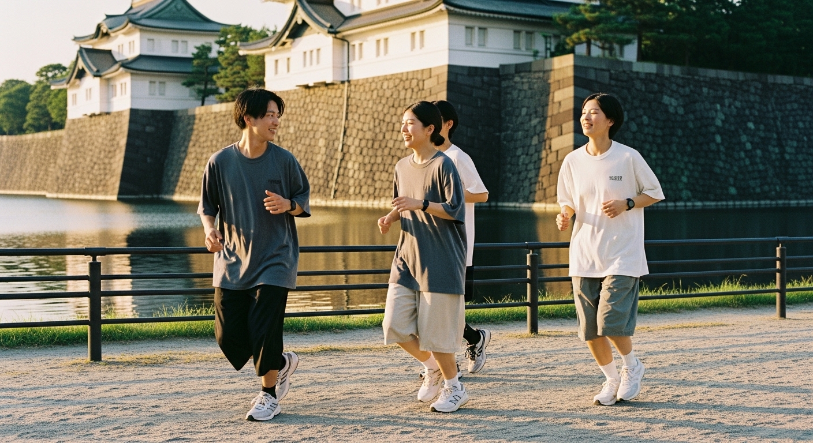

走る場所が変われば、見える景色も変わる。
代々木ラン
木漏れ日のなかを、誰かと並んで。

皇居ラン
東京のど真ん中を、ぐるっと一周。
Q&A
東京で活動している、
招待制のランニングコミュニティです。
代々木公園や皇居のまわりを、
おしゃべりしながらゆっくり走っています。
速さは求めません。
ただ、誰かと並んで走る場所です。
大丈夫です。
メンバーの半分以上が未経験から始めています。
途中で歩いても、まったく問題ありません。
うまく走ろうとしなくていいんです。
足を出せば、それがもう走るということです。
20代前半から30代後半まで、
会社員、フリーランス、学生、さまざまです。
肩書きも経験も関係なく、
ただ一緒に走る仲間として集まっています。
いいえ。
一人で参加している方がほとんどです。
Contactページから、ひとこと送ってください。
来ようとした、その気持ちがもう最初の一歩です。
1kmあたり7〜8分くらいです。
おしゃべりしながら走れるペースです。
急ぐ必要はありません。
だいたい1時間くらいです。
走る時間は30〜40分ほどで、
あとは集まっておしゃべりしたり、軽くストレッチしたり。
気軽に来て、気軽に帰れる空気です。
初回は無料です。
まずは気軽に来てみてください。
2回目以降は月額500円をいただいています。
飲み物の差し入れや活動にかかる費用に充てています。
お支払いはStripeでのカード決済です。
もちろんです。
来れるときに来て、
帰りたくなったら帰る。
それで大丈夫です。
走れる靴がひとつあれば、
それで足ります。
ウェアも普段着で大丈夫です。
荷物が気になる方は、小さめのバッグがあると便利です。
お休みです。
開催の判断は、前日の夜にDiscordでお伝えします。
走らない日もまた、ROUGHの一部です。
気になったら、まずはノックしてみてください。
Contact